AMARCH26 — Trento, June 4th, 2026
University of Trento, Department of Industrial Engineering
3-D technologies support archaeological research when replicas and models are treated as documented interpretations of material evidence
3-D reconstruction converts observations of an artefact, structure, or landscape into a digital model with measurable geometry.
Key principle
There is no universally best capture method. For archaeological objects, the best choice is the one that preserves provenance, scale, uncertainty, and reproducibility for the intended research question.
It’s quite like our binocular vision:
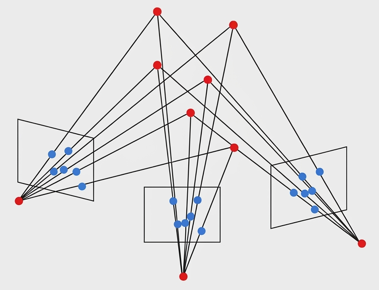
Advantages and limitations
Photogrammetry is a cost-effective and accessible method for 3-D reconstruction, as it only requires a camera and software. However, it can be less accurate than other methods, especially for objects with low texture or in challenging lighting conditions.
Advantages and limitations
Structured light scanning gives high local resolution and fast acquisition, but glossy, translucent, very dark, or deeply undercut surfaces may need surface preparation, multiple scan angles, or another method.
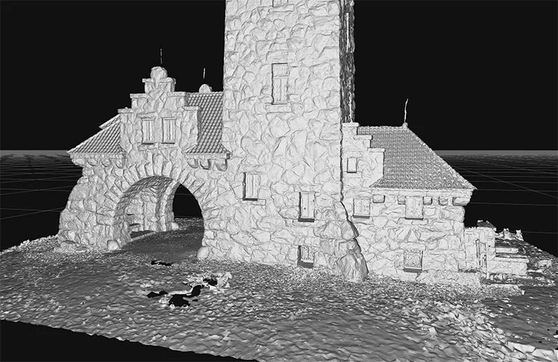
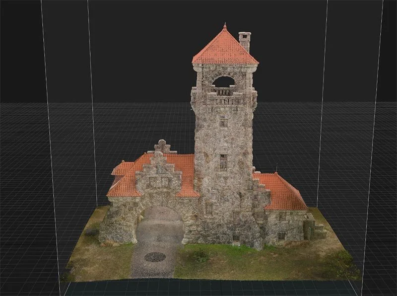
Advantages and limitations
LiDAR excels at scale and spatial context, but equipment cost, line-of-sight gaps, large datasets, and limited close-range surface detail make it complementary to artefact-level scanning
Wavelengths: short-wave infrared spectrums 905 nm (more sensitive) or eye-safe 1550 nm
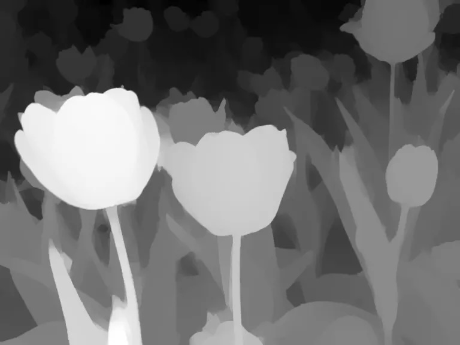
Advantages and limitations
Time-of-flight devices are fast and portable (iPhone has two), but their resolution and edge accuracy are usually lower than close-range photogrammetr or, structured light scanning for small artefacts, and lower than LiDAR for large-scale contexts
| Technical Metric | LiDAR Scanning | ToF (Flash/Phase Array) |
|---|---|---|
| Spatial Sampling | Sequential point-by-point (mechanical or MEMS sweep) | Simultaneous matrix array (instant snapshot) |
| Operational Range | Long-range (10m to 500m+) | Short to medium-range (0.1m to 5m–10m) |
| Measurement Method | Direct time interval measurement | Indirect phase-shift detection |
| Angular Resolution | Extremely high (dependent on mechanical/galvanometer precision) | Dependent on pixel array density (lower resolution than scanning) |
| Frame Rate | Limited by scanning sweep mechanics (typically 10–30 Hz) SLOW | Very high frame rates achievable (up to 60–120+ fps) FAST |
| Ambient Light | Tolerance Exceptionally high (filters out solar noise via narrow aperture/wave) | Prone to solar washing (indoor optimization preferred) |
| Moving Parts | Yes (in spinning/MEMS units); No (in pure solid-state OPA) | Completely solid-state (zero moving parts) |
Note
Both methods can be augmented with RGB cameras for color information, and inertial measurement units (IMUs) for improved spatial tracking or range extension, but their core depth sensing technologies differ significantly in terms of resolution, range, and susceptibility to environmental conditions.
.objcap file that must be opened by Reality Composer Pro app on macOS (free).usdz format, which is compatible with many 3-D software and online platforms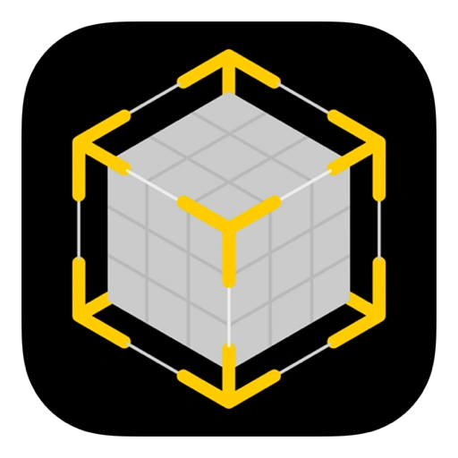
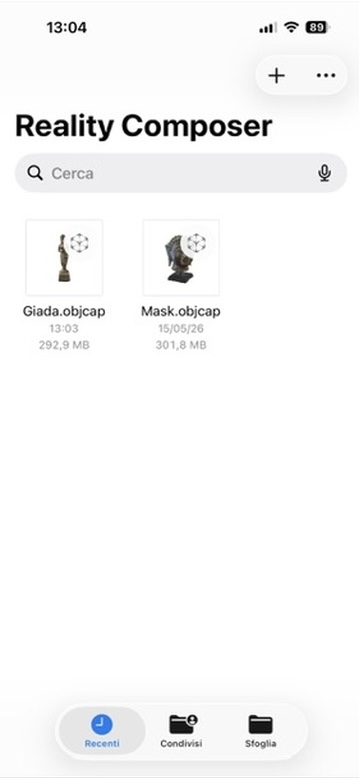
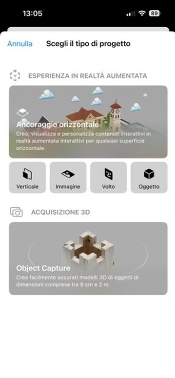
Scanned with Reality Composer on iPhone 16 Pro, exported as .usdz, and rendered with the same WebGL viewer as the photogrammetry model
Important
Note the holes in the model: a 3-D scan, regardless the technology, provides a surface model, which has no information about the internal structure of the object. The holes are areas where the scanner could not capture data, often due to occlusions, reflective surfaces, or insufficient texture.
Precision is the consistency of measurements across repeated scans, while resolution is the smallest feature size that can be reliably captured. Both are influenced by the scanning technology, settings, and object properties.
| Technology | Lateral Resolution | Depth Resolution | 3D Precision |
|---|---|---|---|
| Photogrammetry | 0.05–2 mm/pixel | 0.1–5 mm | 0.1–1 mm |
| Structured Light | 0.02–0.5 mm/pixel | 0.01–0.1 mm | 0.01–0.1 mm |
| LiDAR | 1–20 mm | 1–10 mm | 1–10 mm |
| ToF | 1–20 mm/pixel | 1–20 mm | 5–50 mm |
Note
The digital sensor resolution in mm/pixels is called Ground Sampling Distance (GSD), and it is a key metric for understanding the level of detail in a 3-D reconstruction. A smaller GSD means higher resolution and finer detail, while a larger GSD indicates lower resolution and less detail.
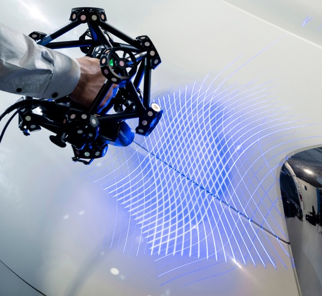
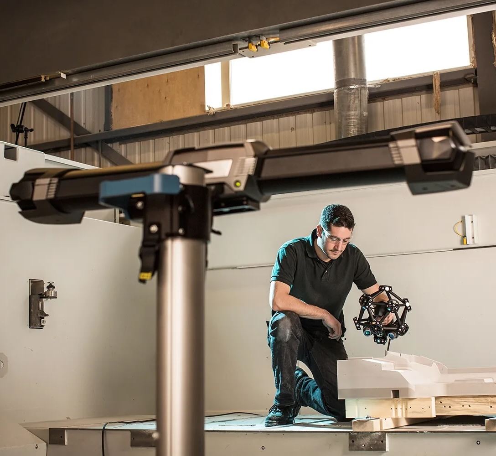
3-D printing turns digital reconstructions into physical replicas whose research value depends on scale control, material choice, finishing, and documentation
.stl (geometry only) and .obj (geometry + texture), but some printers require proprietary formats or additional metadataNote
AM processes work layer-by.layer, so the mudel must be sliced into thin horizontal sections
Note
Scan reslution might affect print result, but too high is just as bad as too low, because it can create unnecessarily large files and long print times without improving the final quality of the replica
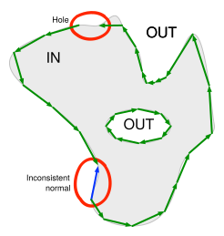
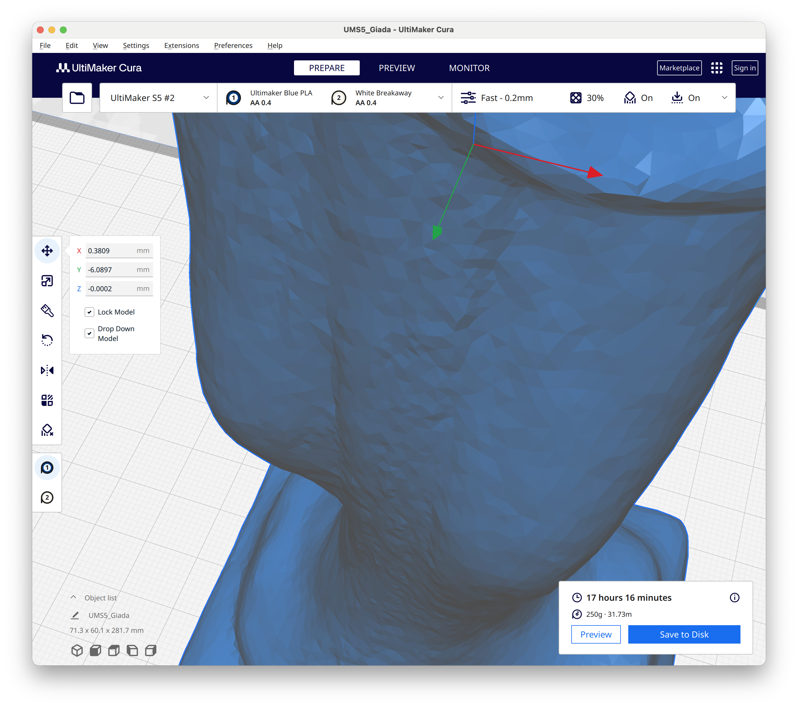
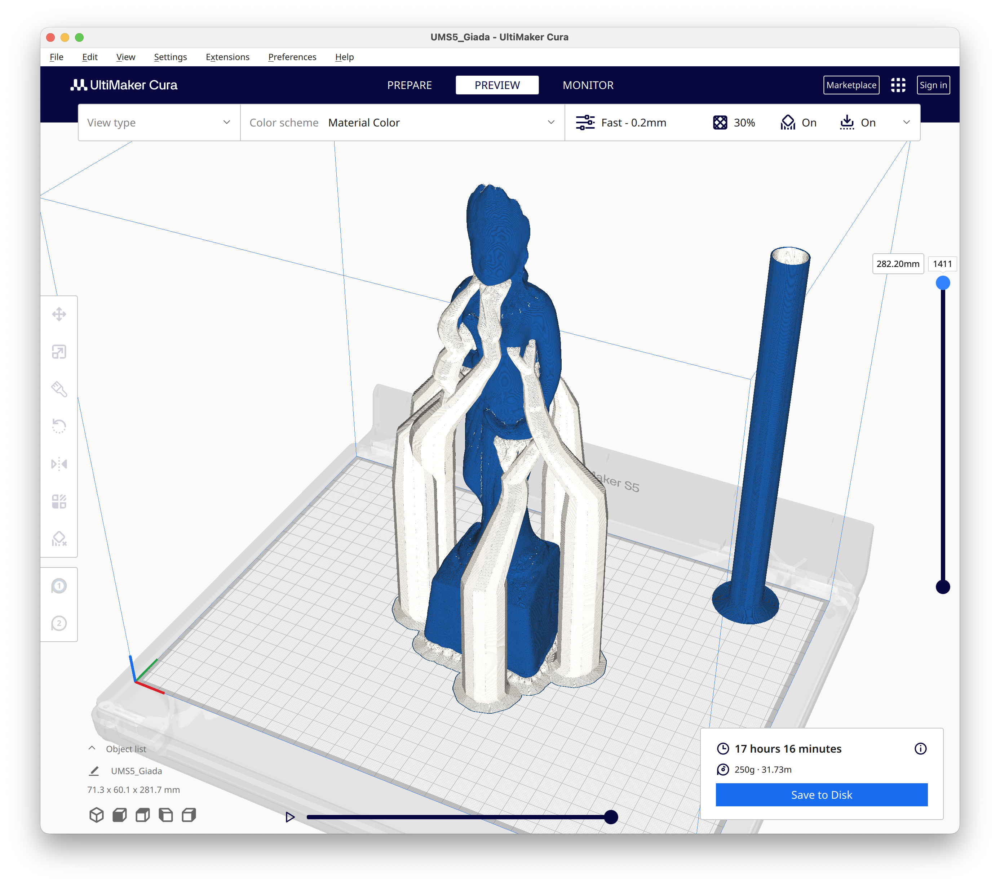
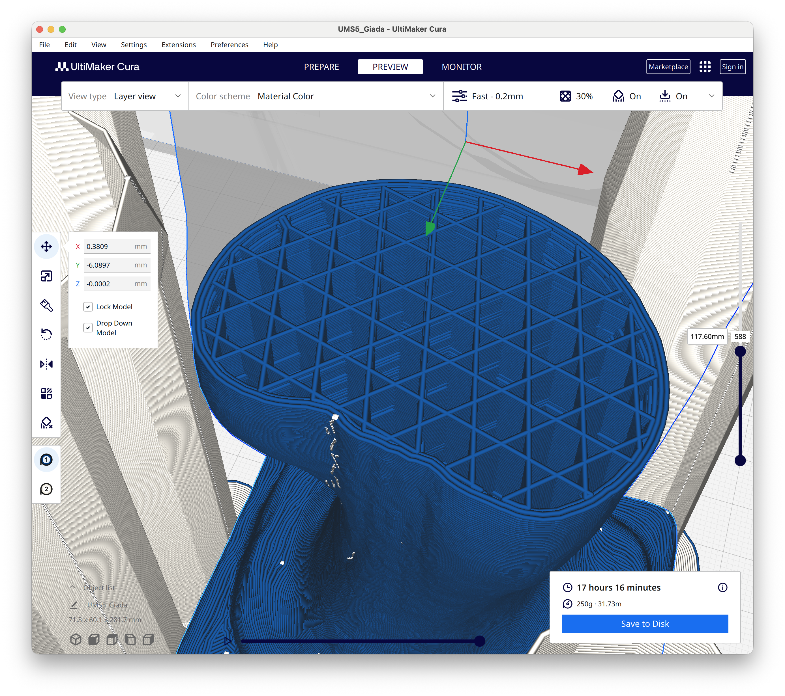
3-D printing is a subset of Additive Manufacturing (AM) that builds objects layer by layer from a digital model, using various materials and processes to achieve different levels of detail, strength, and finish
| Family | Common technologies | Typical archaeological use |
|---|---|---|
| Material extrusion | FDM, FFF | Low-cost handling models, teaching sets, enlarged tactile replicas |
| Vat photopolymerization | SLA, MSLA, DLP | Small finds with fine relief, inscriptions, seals, detailed fragments |
| Powder bed and binder | SLS, MJF, binder jet | Complex shapes, durable nylon replicas, color display models |
| Metal additive manufacturing | PBF, DED, metal binder jet | Specialist replicas, mounts, experimental tools, structural parts |
Selection criteria
Choose the printing process from the required detail, strength, color, handling conditions, cost, post-processing effort, and ethical need to distinguish replica from original.
| Technology | Cost | Common materials | Archaeological fit |
|---|---|---|---|
| Material extrusion | PLA, PETG, ABS, nylon, filled filaments, concrete | Robust handling models, enlarged tactile replicas, trial reconstructions, buildings | |
| Vat photopolymerization | Standard, tough, flexible, castable, high-temperature resins; resins w. ceramic load | Small artefacts with fine relief, coins, seals, figurines, engraved surfaces, masters for moulding | |
| Powder bed and binder | Nylon, gypsum, sandstone, concrete | Complex geometry without many visible support scars, durable handling collections, full-color display models using texture maps | |
| Metal additive manufacturing | Stainless steel, aluminum, titanium, bronze | Specialist replicas when weight, stiffness, wear, or heat resistance matter, mounts, brackets, replacement fixtures, experimental archaeology tools |
Warning
Material extrusion and photopolymerization are desktop-compatible processes; powder bed and metal AM usually require industrial equipment and safety precautions, which can increase cost and turnaround time, and limit material options and post-processing control.
Practical note
Polymers are usually the most accessible materials for archaeological replicas, but they should be described as interpretive copies with recorded source model, scale, printer, material, and finishing steps.
Advantages and limitations
Filament printing is inexpensive and durable, but layer lines, anisotropic strength, overhang supports, and limited fine detail can affect the accuracy of inscriptions, tool marks, and thin edges.
Advantages and limitations
Resin printing captures fine detail well, but uncured resin is hazardous, parts can be brittle or UV-sensitive, and support scars or shrinkage may compromise metric fidelity.
Advantages and limitations
Powder processes can handle complex forms and color, but surfaces may be grainy or porous, cavities can trap powder, and equipment and service costs are higher than desktop polymer printers.
Warning
Regardless of the technology, powder-based printing often requires industrial equipment and safety precautions, which can increase cost and turnaround time, and limit material options and post-processing control
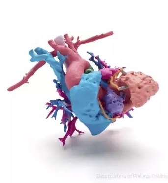
Advantages and limitations
Metal printing is costly and technically demanding; in archaeology it is most defensible when material properties are part of the research or conservation problem, not merely for visual resemblance.
AMARCH26 — Home —